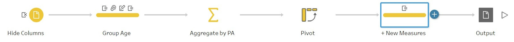

Take-Home_Ex01
1.Task
Age-sex pyramid is an analytical visualisation commonly used by demographers to reveal the structure of population by gender and age group. In this take-home exercise, you are required to reveal the demographic structure of Singapore at planning area level by using age-sex pyramid method. Instead of plotting a single age-sex pyramid, however, you are required to display nine selected planning areas on a single view by using trellis display (also know as small-multiple plot).
Singapore Residents by Planning Area / Subzone, Age Group, Sex and Type of Dwelling, June 2022 should be used to prepare the analytical visualisation. The data can be downloaded here.
2.Visualisation
The proposed visualisation can be viewed on Tableau Public here.
3.Key Observations
4.Step by Step Preparation
This section details the steps required to produce the dashboard as described in section 2.
4.1 Use Tableau Prep for data preparation
The flow of the data preparation is as shown below.

| No. | Step | Screenshot |
|---|---|---|
| 1 | Load the originl data csv into Tableau Prep by click the plus symbol besides Connections, then choose Text File. |  |
| 2 | Hide unnecessary columns by unclick the specific Field Name. In this task, the SZ(subzone), FA(floor area), Time(2022) are hided. |  |
| 3 | ||
| 4 | ||
| 5 | ||
| 6 |